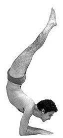
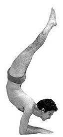

left-right symmetric
forearm balance similar to Vrischikasana, but the legs are straight, stretched up over the head, with the back less extremely arched

source: Yoga Journal
| Current pose: Feathered Peacock Pose, legs straight | Adjacent poses: |
|
Pincha Mayurasana left-right symmetric forearm balance similar to Vrischikasana, but the legs are straight, stretched up over the head, with the back less extremely arched source: Yoga Journal |